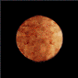
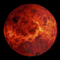
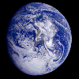
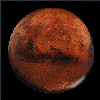
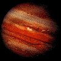
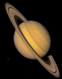
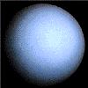
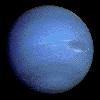
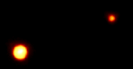
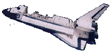

Mercury is moon-like.
Venus was like Earth.
Earth, you are here.
Mars is the red planet.
Jupiter has the spot.
Saturn is the planet with very visible rings.
Uranus is surprisingly boring.
Neptune is blue.
Pluto is very distant.
Orbiter.
 visitors since sometime in the mid-1990s.
visitors since sometime in the mid-1990s.